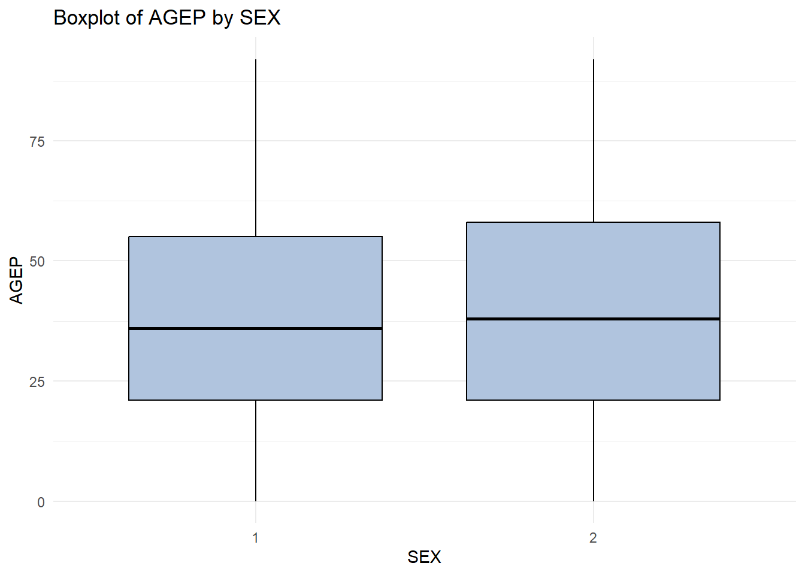

# Load required libraries
library(tidyverse)
library(jsonlite)
library(httr)
library(hms)Query Functions for Public Use Microdata Sample Census API
Introduction CHRIS
Setting Things Up
Collaboration Workflow
Libraries
Primary User Interface Methods
The following two functions are designed to take user input and return a properly formatted and easy to use data table in the form of a tibble. They will validate each input from the user and pass them into functions whose purpose is the work of creating, processing, and handling our api request and response. With user validation checks up front, the helper functions can assume that their inputs are as expected and they can focus on the the more rigorous tasks of transforming user inputs into usable data structures.
We will also introduce two further interface methods that allow for additional features such as summaries and plots. These Generic Class Functions will take the tibble retrieved from the census API do display meaningful summaries and plots depending on the user’s demands.
get_data_tibble_from_census_api
The first step is to define the inputs we expect from the user. All of our inputs have default settings. As such, this function can be called without arguments and will return census data from the year 2022 from the state of Colorado. In particular, it will return the numeric variables AGEP and PWGTP. As well as the categorical variable SEX.
No matter the case, we always pass these inputs to various validation functions. We will discuss each of these in turn below.
With valid input from the user, we then set a chain of events to first build the URL from those inputs, then send that request for information from the census. With the data in it’s raw form from the API, we can then work to format it for ease of use.
# User interface to take inputs and return fully processed data tibble
get_data_tibble_from_census_api <- function(year = 2022,
numeric_vars = c("AGEP", "PWGTP"),
categorical_vars = c("SEX"),
geography = "State",
subset = "CO") {
# validate the user inputs
validate_year(year)
validate_numeric_vars(numeric_vars)
validate_categorical_vars(categorical_vars)
validate_geography_and_subset(geography, subset)
# Send inputs to retrieve data
build_query_url(year,
numeric_vars,
categorical_vars,
geography,
subset) |>
query_census_with_url()
}query_census_multiple_years
- In addition to the same arguments as the single year version, this function also takes in a range of years
- A loop calls the single year function with each iteration, adding the results as new elements to a list. Each tibble also has a new column designating the year.
- After the loop, bind rows is used to combine all results into one tibble
# Function for Querying Multiple Years
query_census_multiple_years <- function(years,
numeric_vars = c("AGEP", "PWGTP"),
categorical_vars = c("SEX"),
geography = "State",
subset = "CO") {
# create empty list to store data frames
multi_year_list <- list()
# call the user interface for each year
for (yr in years) {
# retrieve single year data tibble
census_single_yr <- get_data_tibble_from_census_api(yr,
numeric_vars,
categorical_vars,
geography,
subset)
# append year to the tibble
census_single_yr_tbl <- tibble(Year = yr, census_single_yr)
# check how many elements are currently in list
elements <- length(multi_year_list)
# insert the tbl into the list as the last element
multi_year_list[[elements + 1]] <- census_single_yr_tbl
}
# union of all year-specific results
census_multi_year_tbl <- bind_rows(multi_year_list)
# return the final tibble
return(census_multi_year_tbl)
}Data Processing
Utilities
We define a few “getter” functions that allow us to fetch the valid variables whenever required.
get_valid_numeric_vars <- function() {
c("AGEP", "PWGTP", "GASP", "GRPIP", "JWAP", "JWDP", "JWMNP")
}
get_valid_categorical_vars <- function() {
c("SEX", "FER", "HHL", "HISPEED", "JWTRNS", "SCH", "SCHL")
}
get_valid_geography_levels <- function() {
c("All", "Region", "Division", "State")
}get_subset_code
In the construction of the URL, this function will take in the combination of Geography and Subset to return that particular subset’s numeric code to be used in the URL itself. If the subset is NULL, we simply return an astrix to be used with any geography the user might provide. Otherwise, we need to retrieve the appropriate subset pertaining to the given geography.
get_subset_code <- function(geography, subset) {
if (is.null(subset)) {
return("*")
}
# Mappings for regions and divisions
region_codes <- list(
"Northeast" = "1",
"Midwest" = "2",
"South" = "3",
"West" = "4"
)
division_codes <- list(
"New England" = "1",
"Middle Atlantic" = "2",
"East North Central" = "3",
"West North Central" = "4",
"South Atlantic" = "5",
"East South Central" = "6",
"West South Central" = "7",
"Mountain" = "8",
"Pacific" = "9"
)
geography <- tolower(geography)
# Switch based on geography type
switch(geography,
"region" = region_codes[[subset]],
"division" = division_codes[[subset]],
"state" = get_state_code(subset),
stop("Invalid geography type"))
}get_state_code
As mentioned, we have a dedicated helper for states. This function is not only used to retrieve the appropriate numeric code that is to be used in the construction of the URL, it also has a stop() within it that will allow us the validate if the the state input returns a valid code.
# Function to get state code from state name or abbreviation
get_state_code <- function(state_input) {
state_input <- tolower(state_input)
# Provided state codes
state_codes <- c(
"01" = "Alabama/AL",
"02" = "Alaska/AK",
"04" = "Arizona/AZ",
"05" = "Arkansas/AR",
"06" = "California/CA",
"08" = "Colorado/CO",
"09" = "Connecticut/CT",
"10" = "Delaware/DE",
"11" = "District of Columbia/DC",
"12" = "Florida/FL",
"13" = "Georgia/GA",
"15" = "Hawaii/HI",
"16" = "Idaho/ID",
"17" = "Illinois/IL",
"18" = "Indiana/IN",
"19" = "Iowa/IA",
"20" = "Kansas/KS",
"21" = "Kentucky/KY",
"22" = "Louisiana/LA",
"23" = "Maine/ME",
"24" = "Maryland/MD",
"25" = "Massachusetts/MA",
"26" = "Michigan/MI",
"27" = "Minnesota/MN",
"28" = "Mississippi/MS",
"29" = "Missouri/MO",
"30" = "Montana/MT",
"31" = "Nebraska/NE",
"32" = "Nevada/NV",
"33" = "New Hampshire/NH",
"34" = "New Jersey/NJ",
"35" = "New Mexico/NM",
"36" = "New York/NY",
"37" = "North Carolina/NC",
"38" = "North Dakota/ND",
"39" = "Ohio/OH",
"40" = "Oklahoma/OK",
"41" = "Oregon/OR",
"42" = "Pennsylvania/PA",
"44" = "Rhode Island/RI",
"45" = "South Carolina/SC",
"46" = "South Dakota/SD",
"47" = "Tennessee/TN",
"48" = "Texas/TX",
"49" = "Utah/UT",
"50" = "Vermont/VT",
"51" = "Virginia/VA",
"53" = "Washington/WA",
"54" = "West Virginia/WV",
"55" = "Wisconsin/WI",
"56" = "Wyoming/WY",
"72" = "Puerto Rico/PR"
)
# Tibble with state name and abbreviation
state_codes_tibble <- tibble(
code = names(state_codes),
state_info = state_codes
) |>
separate_wider_delim(state_info, delim = "/",
names = c("state", "abbreviation")) |>
mutate(state = tolower(state),
abbreviation = tolower(abbreviation))
# Filter down to match input
result <- state_codes_tibble |>
filter(state == state_input | abbreviation == state_input) |>
pull(code)
# Return the state code or stop if not found
if (length(result) == 0) {
stop("Invalid state name or abbreviation")
}
return(result)
}Input Validation
We want to be able to fail early and give pertinent information back to the user if inputs are wrong or if an error occurs. These validation checks serve that purpose. If an input is wrong, we want to display to the user which input and what the correct options might be.
Ensure that the year is between 2010 and 2022
# Year must be between 2010 and 2022.
validate_year <- function(year){
if (!(year %in% 2010:2022))
stop("Year must be between 2010 and 2022.")
}test_error(validate_year(2000))Caught error: Year must be between 2010 and 2022.Here we handle the numeric variables. PWGTP and at least one other valid numeric variable must be selected. We have our lists of valid inputs in the utility functions below. We will check against these to ensure each variable in the input is valid.
# PWGTP and at least one other valid numeric variable must be selected
validate_numeric_vars <- function(numeric_vars) {
# Not worried about case
valid_numeric_vars <- toupper(get_valid_numeric_vars())
numeric_vars <- toupper(numeric_vars)
numeric_vars <- intersect(numeric_vars, valid_numeric_vars)
if (length(numeric_vars) < 2 || !"PWGTP" %in% numeric_vars) {
stop("PWGTP and at least one other numeric variable must be selected.")
}
}test_error(validate_numeric_vars(c("Invalid")))Caught error: PWGTP and at least one other numeric variable must be selected.In a similar fashion, we handle categorical variable inputs. We expect at least one categorical variable from the user. It should be noted, that we are not so much interested in the case of the variables. The URL does have a standard for case, but it does not cause an error in testing. Thus, we allow it for a better user experience.
# At least one valid categorical variable must be selected
validate_categorical_vars <- function(categorical_vars) {
# Not worried about case
valid_categorical_vars <- toupper(get_valid_categorical_vars())
categorical_vars <- toupper(categorical_vars)
categorical_vars <- intersect(categorical_vars, valid_categorical_vars)
if (length(categorical_vars) < 1) {
stop("At least one valid categorical variable must be selected from: ",
paste(valid_categorical_vars, collapse = ", "))
}
}test_error(validate_categorical_vars(c("Invalid")))Caught error: At least one valid categorical variable must be selected from: SEX, FER, HHL, HISPEED, JWTRNS, SCH, SCHLvalidate_geography_and_subset
Geography and subset are a bit more complicated, but the general idea still applies. We want to check the input against valid lists. Firstly we need to check geography. Given that geography, there are valid subsets that can be accepted. The subset can be NULL for any choice of geography.
Selecting the State geography in particular is worth mentioning. We developed a helper for states because we wanted to allow the user to provide a state name or abbreviation instead of a state code. In this way it is handled slightly different from the other geographies.
# Geography & Subset Together
validate_geography_and_subset <- function(geography, subset) {
# Handle case
valid_geography_levels <- tolower(get_valid_geography_levels())
geography <- tolower(geography)
# Validate the geography
if (!(geography %in% valid_geography_levels)) {
stop("Invalid geography level. Must be one of: ",
paste(valid_geography_levels, collapse = ", "))
}
# If geography is "all", subsetting is not allowed
if (geography == "all" && !is.null(subset)) {
stop("Subsetting is not allowed when geography is 'All'.")
}
valid_region_division_options <- list(
region = tolower(c("Northeast", "Midwest", "South", "West")),
division = tolower(c("New England", "Middle Atlantic",
"East North Central", "West North Central",
"South Atlantic", "East South Central",
"West South Central", "Mountain", "Pacific"))
)
# Check for region and division
if (geography %in% c("region", "division")) {
if (!(tolower(subset) %in% valid_region_division_options[[geography]])) {
stop("Invalid ", geography, ". Must be one of: ",
paste(valid_region_division_options[[geography]], collapse = ", "))
}
}
# Handle State geography
if (geography == "state") {
# get_state_code will err out if invalid
state_code <- get_state_code(subset)
}
}#validate_geography_and_subset("region", "Invalid")
#validate_geography_and_subset("Invalid", NULL)validate_url_response
It was discovered that some URL’s do not return data. This caused errors down the line when the functions used to process the data were expecting their own inputs. To handle this issue more gracefully, we built a check on the response from the API.
We first want to check that the status was a success. If we are dealing with more than just empty data, we can actually display the error message to further diagnose the issue.
If the request was a success, we also check that the API returned anything at all for us to process. If nothing came back, there is no need to proceed.
# Check we got something from the API using GET(URL)
validate_url_response <- function(response) {
is_success <- http_status(response)$category == "Success"
response_content <- content(response, as = "text")
has_content <- !is.null(response_content) && nchar(response_content) > 0
if (!is_success || !has_content) {
stop("API request failed: ",
if (!is_success)
http_status(census_raw)$message
else
"Empty response from API."
)
}
print("API request successful")
}Building the URL
Here we reach our first undertaking after validating inputs. We need to construct a URL from the user input.
We ran into some issues with fetching data from various years. It was discovered that by altering our base url dependent upon the year, we were able to query recent years and older records as well. This is seen in the dataset_type in the code below.
We then piece together all the desired variables to append to the base URL.
Geography and subsets are at the end. Here we very much leverage the helper/utility functions that we defined above
# Build a valid URL for the Census API
build_query_url <- function(year = 2022,
numeric_vars = c("AGEP", "PWGTP"),
categorical_vars = c("SEX"),
geography = "State",
subset = 8) {
dataset_type <- ifelse(year == 2021 || year == 2022, "acs1", "acs5")
base_url <- paste0("https://api.census.gov/data/",
year, "/acs/", dataset_type, "/pums?")
# Handle numeric and categorical inputs
query_vars <- c(numeric_vars, categorical_vars)
query_string <- paste0("get=", paste(query_vars, collapse = ","))
# Handle geography levels ("All" will require no 'for' clause)
geography_query <- ""
if (geography != "All") {
# Subsets need to be numeric codes. If null will return *
subset <- get_subset_code(geography, subset)
geography_query <- paste0("for=", gsub(" ", "%20", geography), ":", subset)
}
# Concatenate base_url, query_string, and geography_query
final_url <- paste0(base_url, query_string)
if (geography_query != "") {
final_url <- paste0(final_url, "&", geography_query)
}
cat("URL: ", final_url)
return(final_url)
}Processing the Response
query_census_with_url
- I followed the instructions from the lecture to query the API and transform the JSON string into a data frame with the raw data
- I wrote a series of helper functions to keep better track of what each step within this function was doing, which helped me stay focused on small tasks rather than get overwhelmed by everything that had to be done to get the final clean data
- The data frame that came out of the JSON to data frame helper had all the data in columns, but everything was character, so I wrote a final helper function, process_census_data
query_census_with_url <- function(url) {
# retrieve data in list form from API
census_raw <- httr::GET(url)
# check that data was returned
validate_url_response(census_raw)
# call helper function to turn API raw data into a raw tibble
census_raw_tbl <- json_to_raw_tbl_helper(census_raw)
# call helper function to clean tibble
census_clean_tbl <- process_census_data(census_raw_tbl)
# return final clean tibble
return(census_clean_tbl)
}json_to_raw_tbl_helper
- This is a helper function for query_census_with_url, and puts json stuff into a raw tibble. All variables are character
- The data frame that was created from JSON had the column names in the first row, so a step was included to grab the first row as the column names, and take the rest of the rows as the observations
json_to_raw_tbl_helper <- function(census_raw) {
# convert JSON string raw data to data frame (first row are column names)
parsed_census <- as.data.frame(fromJSON(rawToChar(census_raw$content)))
# convert to a tibble, use 1st row from raw df as column names
census_tbl <- as_tibble(parsed_census[-1,])
colnames(census_tbl) <- parsed_census[1,]
# return final tibble
return(census_tbl)
}process_census_data
- This function is responsible for taking the character data in the tibble, and converting them to the appropriate data types.
- It was straight-forward to coerce categorical fields into factors, and the regular numeric fields into numeric.
- It took a lot of debugging and research to get the time fields right.
- At first, I was converting them to factors since JWAP/JWDP were both also initially considered both numerical and categorical variables.
- However, when Chris was working on the plots, he noticed a lot of values were close to midnight. I thought that was strange, so I pulled the data and found a lot of values that were actually 0 were getting changed to 1 somewhere along the way.
- I looked to see if there was something wrong with the join to the time reference table (which provided a time for each time code), and it looked right.
- However, I found that when I coerced them directly from factors to numeric, all of the values changed. So that’s how I learned that when factors are coerced directly to numeric, what you are changing are actually the cardinal levels and not the level description. So “0” was changing to 1 because it was the lowest (first) level. This of course meant that all of the values were now wrong.
- Since Dr. Post confirmed that JWAP/JWDP didn’t need to be categorical values, I removed the step that was converting them to factors, and the values now converted (from character) as expected.
process_census_data <- function(census_data_tbl) {
# retrieve valid categorical variables (exclude JWAP/JWDP; if converted from
# factor directly to numeric, this will make the values incorrect)
cat_vars <-
get_valid_categorical_vars() |>
intersect(names(census_data_tbl)) |>
setdiff(c("JWAP", "JWDP"))
# convert categorical variables to factors
for (var in cat_vars){
census_data_tbl[[var]] <- as.factor(census_data_tbl[[var]])
}
# retrieve valid numeric vars, keeping only the ones that exist in
# the input raw data (note JWAP and JWDP will still need to be changed to times)
num_vars <-
get_valid_numeric_vars() |>
intersect(names(census_data_tbl))
# turn vars into numeric values in the tibble
for (var in num_vars){
census_data_tbl[[var]] <- as.numeric(census_data_tbl[[var]])
}
# collect the time variables to convert
time_vars <-
c("JWAP", "JWDP") |>
intersect(names(census_data_tbl))
# call helper function to convert time codes to numeric time (won't run if
# time_vars is empty)
for (time_code in time_vars) {
census_data_tbl <- convert_num_code_to_time(census_data_tbl, time_code)
}
# Assign class for custom methods
class(census_data_tbl) <- c("census", class(census_data_tbl))
# return clean tibble
return(census_data_tbl)
}convert_num_code_to_time
- This is another helper function to take the numerical time codes and change them to a meaningful time
- It starts with another helper function to get a reference tibble that provides the key-value pairs for each time code and time
- It takes the census data and left joins to the time reference table, and replaces the JWAP raw value with the actual time. I couldn’t figure out how to use a variable as one of the keys in the “by” argument, so unfortunately I had to do it as a natural join. It’s not ideal, but it does work. It meant the names of the primary and foreign keys in each table had to match (i.e. JWAP or JWDP), and that no other columns between the two tables could share the same name.
- The final step was to replace the values in JWAP/JWDP with the correct time from the 2nd table, and drop the now duplicate field that had been pulled in (named JWAP_clean or JWDP_clean)
convert_num_code_to_time <- function(census_data_tbl, time_code) {
# get time references from API`
times_reference <- get_time_refs(time_code)
# join new JWAP/JWDP to table with proper times
census_data_tbl <-
census_data_tbl |>
left_join(times_reference) # natural join on time code
# assign the cleaned time values to the JWAP/JWDP column
census_data_tbl[time_code] <- census_data_tbl[paste0(time_code, "_clean")]
# Drop the extra column from the time reference table
census_data_tbl <- census_data_tbl |>
select(-one_of(paste0(time_code, "_clean")))
return(census_data_tbl)
}get_time_refs
- This function does an API call to retrieve the time codes and their associated time ranges in a JSON string and processes them into a tibble
- This is probably the function I spent the most time getting to work properly.
- The url for the API endpoint is actually a .json, so I think that might be why the data come in differently than the API call for the census data. The values actually came in the form of a list with all 151-286 values as individual elements in that list.
- I used bind_rows to get those elements into a single tibble, so now each named element was its own column. I transposed the data table with pivot_longer to get just 2 columns, one for the time code and the other for the time range
- Getting from the text time ranges, e.g. “8:50 a.m. to 8:54 a.m.” to a nice, clean time (08:52:00) took me awhile and a few tries. On my first pass, I thought that both JWAP and JWDP had consistent time ranges, so I set up the code to just take a substring for the first time in the interval, convert it to time, and add 2 minutes to JWAP values and 5 minutes to JWDP values.
- While debugging the issue I mentioned before about the time codes changing when coercing from factor to numeric, I looked more closely at the reference tables and realized that JWDP had varying intervals. So I had to change the logic to take both the starting and ending times to compute the midpoint of the interval
- Since I had to repeat the same actions on two different strings to get them both in correct time format, I put in a loop. After that, getting the final time and removing the extraneous columns was pretty straightforward.
get_time_refs <- function(time_code) {
# construct url from the time_code (JWDP or JWAP)
time_url <- paste0("https://api.census.gov/data/2022/acs/acs1/pums/variables/",
time_code, ".json")
# retrieve data in list form from API, then bind rows to put in 1 by x tibble,
# then transpose the data to get key-value pair in columns
times_ref <-
fromJSON(time_url)$values |>
bind_rows() |>
pivot_longer(cols = everything(),
names_to = time_code,
values_to = "time_range")
# convert 1st column (JWAP/JWDP) to numeric
times_ref[[time_code]] <- as.numeric(times_ref[[time_code]])
# filter on the row(s) where JWAP/JWDP == 0, change the value for time_range
# to missing (it is a string that can't be converted to time, starts with "N/A")
times_ref$time_range[times_ref[time_code] == 0] <- NA
# parse the time_range string to find the start and stop times
times_ref <-
times_ref |>
separate_wider_delim(time_range,
delim = " to ",
names = c("start_time", "end_time"),
cols_remove = FALSE)
# convert new start/end columns to time
for (col in c("start_time", "end_time")) {
times_ref[[col]] <-
times_ref[[col]] |>
toupper() |> # change to upper case
str_replace_all("[.]", "") |> # remove periods
parse_date_time('%I:%M %p', tz = "EST") # convert to date-time
}
# calculate time to the midpoint between the start and end times
times_ref <-
times_ref |>
mutate(midpoint = difftime(end_time, start_time) / 2)
# assign new clean time code variable as correct time
times_ref[paste0(time_code, "_clean")] <-
times_ref$start_time + times_ref$midpoint
# convert format from date-time to time (reference by [[]] not [])
times_ref[paste0(time_code, "_clean")] <-
hms::as_hms(times_ref[[paste0(time_code, "_clean")]])
# drop extra columns, keeping only 2 (time code, time code clean)
times_ref <-
times_ref |>
select(-time_range, -start_time, -end_time, -midpoint)
# return final clean ref table
return(times_ref)
}Generic Class Functions
Created generic functions to automatically summarize and plot certain returned data. These are the two additional interfaces that we built for the user. THe expect a tibble from a successful API call.
Summary
By default, it will summarize all numeric variables (other than PWGTP) and all categorical variables in the tibble. The user is able to specify the variables they’d like in particular as additional arguments.
Numeric variables will have their weighted sample means and standard deviations calculated.
Categorical variables will have their level counts displayed.
Time variables are considered numeric here, but they need to be handled with some care. We convert them from their HMS form into seconds from midnight to perform calculation on them. We then convert back to HMS to be in a more friendly format.
# Summary Function for Census Class
summary.census <- function(data,
numeric_vars = NULL,
categorical_vars = NULL) {
# Determine the variables that are actually in the dataset
valid_numeric_vars <- get_valid_numeric_vars()
valid_categorical_vars <- get_valid_categorical_vars()
data_names <- toupper(names(data))
numeric_vars_in_data <- intersect(data_names, valid_numeric_vars)
categorical_vars_in_data <- intersect(data_names, valid_categorical_vars)
# Default: Summarize all numeric variables except PWGTP in dataset
if (is.null(numeric_vars)) {
numeric_vars <- numeric_vars_in_data[numeric_vars_in_data != "PWGTP"]
} else {
# otherwise filter only for those provided
numeric_vars <- intersect(toupper(numeric_vars), numeric_vars_in_data)
}
# Default: Summarize all categorical variables in dataset
if (is.null(categorical_vars)) {
categorical_vars <- categorical_vars_in_data
} else {
# otherwise filter only for those provided
categorical_vars <- intersect(toupper(categorical_vars),
categorical_vars_in_data)
}
weight <- data$PWGTP
summary_list <- list()
# Summarize numeric variables
for (var in numeric_vars) {
# Check if the variable is a time variable
is_time_var <- var %in% c("JWAP", "JWDP")
if (is_time_var) {
# Convert time to seconds
numeric_vector <- as.numeric(data[[var]])
} else if (is.numeric(data[[var]])) {
numeric_vector <- data[[var]]
} else {
stop("Unexpected non-numeric variable: ", var)
}
# Calculate weighted mean and standard deviation
weighted_sample_mean <- sum(numeric_vector * weight, na.rm = TRUE) /
sum(weight, na.rm = TRUE)
sample_sd <- sqrt(sum((numeric_vector^2) * weight, na.rm = TRUE) /
sum(weight, na.rm = TRUE) - weighted_sample_mean^2)
if (is_time_var) {
# Convert the results back to hms
weighted_sample_mean <- as_hms(weighted_sample_mean)
sample_sd <- as_hms(sample_sd)
}
# Store the results
summary_list[[var]] <- list(
mean = weighted_sample_mean,
sd = sample_sd
)
}
# Summarize categorical variables
for (var in categorical_vars) {
counts <- data |> count(.data[[var]])
# Store the results
summary_list[[var]] <- list(
counts = counts
)
}
return(summary_list)
}Plotting
Created a generic plot() function for a census class tibble. Requires the user to specify one categorical variable and one numeric variable for plotting purposes.
Here we check the inputs are in the data and filter out and missing entries before plotting.
The biggest point of note is the use of sampling. Some of the data sets that come through the API can contain millions of records. Particularly if the region is set to All. Due to this circumstance, the plotting was found to take a considerable amount of time. To address this, we simply evaluate the number of rows in the data, and if necessary, take a random sample for plotting purposes.
# Plotting Function for Census Class
plot.census <- function(data,
numeric_var,
categorical_var,
sample_size = 100000) {
# Check User inputs
for (var in c(numeric_var, categorical_var, "PWGTP")) {
if (!var %in% names(data)) {
stop(paste("The variable", var, "is not present in the dataset. ",
"Select from: ", paste(names(data), collapse = ", ")))
}
}
# Remove NA records
data <- data |>
filter(!is.na(.data[[numeric_var]]) &
!is.na(.data[[categorical_var]]))
# If the dataset is large, take a random sample
if (nrow(data) > sample_size) {
message(nrow(data), " resords found in dataset. Sampled ",
sample_size, " rows for plotting.")
set.seed(123)
data <- data |> sample_n(sample_size)
}
# Plot with ggplot2
ggplot(data,
aes(x = get(categorical_var),
y = get(numeric_var),
weight = PWGTP)) +
geom_boxplot(fill = "lightsteelblue", color = "black") +
labs(
title = paste("Boxplot of", numeric_var, "by", categorical_var),
x = categorical_var,
y = numeric_var
) +
theme_minimal()
}Results KATY
Single Year
test_with_defaults <- get_data_tibble_from_census_api()URL: https://api.census.gov/data/2022/acs/acs1/pums?get=AGEP,PWGTP,SEX&for=State:08[1] "API request successful"test_with_defaults |>
head() |>
knitr::kable(align = 'c')| AGEP | PWGTP | SEX | state |
|---|---|---|---|
| 18 | 70 | 2 | 08 |
| 35 | 41 | 1 | 08 |
| 40 | 35 | 1 | 08 |
| 20 | 30 | 2 | 08 |
| 14 | 4 | 1 | 08 |
| 28 | 75 | 2 | 08 |
summary.census(test_with_defaults)$AGEP
$AGEP$mean
[1] 38.80219
$AGEP$sd
[1] 22.42793
$SEX
$SEX$counts
# A tibble: 2 × 2
SEX n
<fct> <int>
1 1 29940
2 2 29901plot.census(test_with_defaults, "AGEP", "SEX")